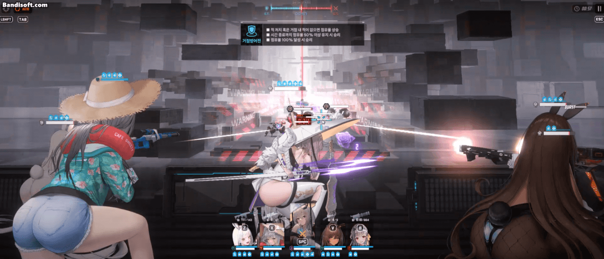
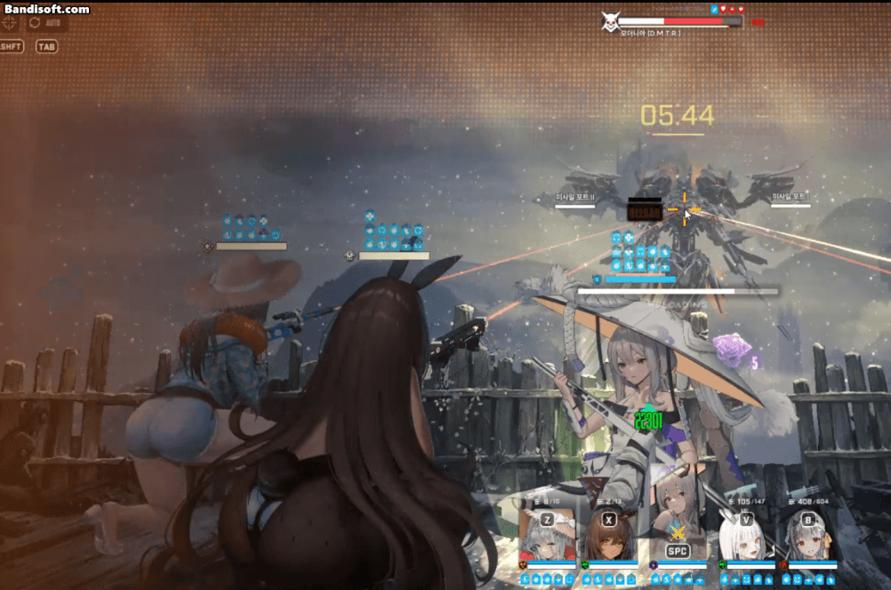
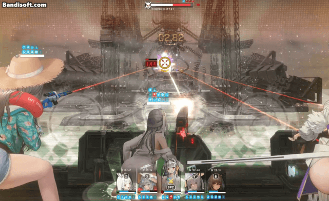

엄폐컨
니케가 공격을 당하는걸 엄폐물이 대신 막아주는 것
여기서 포인트는 엄폐를 하면서 생기는 딜로스를 최대한 줄이는거임
모바일은 니케 초상화를 누르고, PC버전은 SPACE바를 누르면
모든 니케들이 전체 엄폐를 하게됨, 푸는 방법도 동일
엄폐컨을 빠르게 하면 MG 예열이 안 끊겨서 모더같은 애들이 바로 속사를 할 수 있음

태보
태보는 엄폐컨과 반대로 공격을 회피하는게 아니라
공격을 헛방치도록 "유도" 하는 것이므로
엄폐컨과 다르게 데미지를 1도 받지 않음
위의 짤처럼 낙탄이 있는 투사체는
공격을 하기 전, 먼저 니케의 위치 (엄폐 or 공격)를 향해 날아가는데
이때 투사체가 착탄되기 전에 니케의 위치를 의도적으로 바꾸면 피할 수 있음
태보는 여러 군데에서 쓰므로 반드시 익혀야 하는 기술임
단, 리타, 유니, 노아, 수니스 같은 니케들은 히트박스가 커서 태보가 안됨
Q. 그럼 엄폐컨말고 태보하면 되는거 아님?
A. 태보가 안되는 공격이 있음 (ex. 디거 저지실패)
다시 한번 복습! 체력바를 유심히 봐보셈

엄폐컨
태보